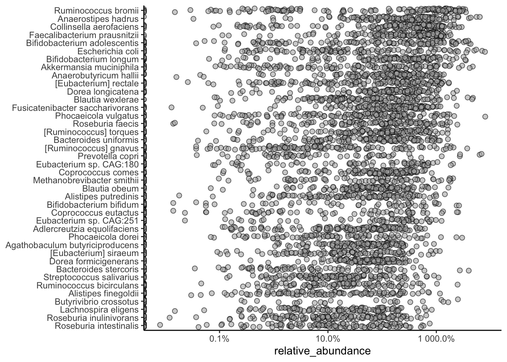

# Install the mia package
BiocManager::install("microbiome/mia")24 Microbiome analysis
The human microbiome is a complex ecosystem of bacteria, viruses, fungi, and other microorganisms that live in and on the human body. These microorganisms play a crucial role in human health and disease, influencing everything from digestion and metabolism to immune function and mental health. Understanding the composition and function of the human microbiome is a rapidly growing area of research with implications for a wide range of fields, including medicine, agriculture, and environmental science.
Microbiome analysis involves studying the microbial communities that inhabit different environments, such as the human gut, skin, mouth, and soil. The analysis of microbiome data typically involves quantifying the abundance of different microorganisms in a given sample and comparing the microbial communities across different samples or conditions. This can help researchers identify patterns, relationships, and associations between microbial communities and various factors, such as health status, diet, lifestyle, and environmental conditions.
In this chapter, we will assume that the data has already been processed and cleaned, and we will focus on analyzing the microbiome data using R.
24.1 Getting started
We’ll be using the mia package for microbiome analysis in R. The mia package provides a suite of tools for analyzing microbiome data, including functions for loading, processing, and visualizing microbiome data. The package is designed to work with the SummarizedExperiment and TreeSummarizedExperiment classes, which are specialized data structures for storing microbiome data in R.
To get started, you’ll need to install the mia package from GitHub using the BiocManager package. If you don’t already have the BiocManager package installed, you can install it using the following command:
Note
Note: The mia package is part of the Bioconductor project, but in this case, we are installing it directly from GitHub using the microbiome/mia repository. This is a common practice when working with development versions of packages or with packages that are not yet available on Bioconductor.
Once the mia package is installed, you can load it into your R session using the following command:
Now that the mia package is loaded, we can load the microbiome dataset that we will be working with.
24.2 Accessing microbiome datasets
There are many publicly available microbiome datasets that you can use for analysis. Bioconductor provides several packages that contain curated microbiome datasets that facilitate access to and loading microbiome data into R for analysis.
curatedMetagenomicData is a large collection of curated human microbiome datasets, provided as TreeSE objects (Pasolli et al. 2017). The resource provides curated human microbiome data including gene families, marker abundance, marker presence, pathway abundance, pathway coverage, and relative abundance for samples from different body sites. See the package homepage for more details on data availability and access.
The microbiomeDataSets package provides a collection of curated microbiome datasets for teaching and research purposes. The package contains several example datasets that can be used to explore different aspects of microbiome analysis, such as alpha and beta diversity, differential abundance analysis, and visualization.
The mia package and several other packages provide example datasets for learning and testing the functions in the package. These datasets are typically small and easy to work with, making them ideal for learning how to analyze microbiome data in R.
24.3 Data containers
Bioconductor provides several specialized data structures for storing and working with microbiome data in R. These data structures are designed to handle the complex and high-dimensional nature of microbiome data and provide a convenient and efficient way to store, manipulate, and analyze microbiome data in R.
SummarizedExperiment (SE) (Morgan et al. 2020) is a generic and highly optimized container for complex data structures. It has become a common choice for analyzing various types of biomedical profiling data, such as RNAseq, ChIp-Seq, microarrays, flow cytometry, proteomics, and single-cell sequencing.
TreeSummarizedExperiment (Huang 2020) was developed as an extension to incorporate hierarchical information (such as phylogenetic trees and sample hierarchies) and reference sequences.
24.4 Loading a microbiome dataset
We will be using the curatedMetagenomicData package to load the FengQ_2015 dataset. This dataset contains microbiome data from a study by Feng et al. (2015). The curatedMetagenomicData package provides a convenient interface for accessing microbiome datasets that have been pre-processed and curated for analysis.
Note
Take a moment to familiarize yourself with at least the title and abstract from the paper. We won’t be reproducing the analysis in the paper, but it is helpful to connect the code in this workflow to the biology and research.
# Again, before using a package, we must install it
# just once.
BiocManager::install('curatedMetagenomicData')Once installed, we can use the package.
Ignore the details of the next few lines of code for now, but suffice it to say that what the code will do for us is to load a dataset for downstream analysis.
# Load the FengQ_2015 dataset
library(curatedMetagenomicData)
tse <- curatedMetagenomicData("FengQ_2015.relative_abundance", dryrun = FALSE, rownames = "short")[[1]]
$`2021-03-31.FengQ_2015.relative_abundance`
dropping rows without rowTree matches:
k__Bacteria|p__Actinobacteria|c__Coriobacteriia|o__Coriobacteriales|f__Atopobiaceae|g__Olsenella|s__Olsenella_profusa
k__Bacteria|p__Actinobacteria|c__Coriobacteriia|o__Coriobacteriales|f__Coriobacteriaceae|g__Collinsella|s__Collinsella_stercoris
k__Bacteria|p__Actinobacteria|c__Coriobacteriia|o__Coriobacteriales|f__Coriobacteriaceae|g__Enorma|s__[Collinsella]_massiliensis
k__Bacteria|p__Firmicutes|c__Bacilli|o__Bacillales|f__Bacillales_unclassified|g__Gemella|s__Gemella_bergeri
k__Bacteria|p__Firmicutes|c__Bacilli|o__Lactobacillales|f__Carnobacteriaceae|g__Granulicatella|s__Granulicatella_elegans
k__Bacteria|p__Firmicutes|c__Clostridia|o__Clostridiales|f__Ruminococcaceae|g__Ruminococcus|s__Ruminococcus_champanellensis
k__Bacteria|p__Firmicutes|c__Erysipelotrichia|o__Erysipelotrichales|f__Erysipelotrichaceae|g__Bulleidia|s__Bulleidia_extructa
k__Bacteria|p__Proteobacteria|c__Betaproteobacteria|o__Burkholderiales|f__Sutterellaceae|g__Sutterella|s__Sutterella_parvirubra
k__Bacteria|p__Synergistetes|c__Synergistia|o__Synergistales|f__Synergistaceae|g__Cloacibacillus|s__Cloacibacillus_evryensisThis code goes out to the internet and downloads the dataset for you. The tse object is a TreeSummarizedExperiment object that contains the microbiome data from the Feng et al. (2015) study. The TreeSummarizedExperiment class is a specialized data structure for storing microbiome data in R, and it is used by the mia package for microbiome analysis.
Tip
If you are working with your own microbiome data, you will often need to load it into R using functions like read.csv() or read.table() to read tabular data files. Make sure your data is properly formatted and cleaned before loading it into R for analysis.
Once the data is loaded into R, we can start exploring the data to understand its structure and contents. The tse object is a TreeSummarizedExperiment object, which is a specialized data structure for storing microbiome data in R. It works quite like a data.frame in, but with many specialized structures for storing microbiome experiment data as shown in Figure 24.1. We can use various functions to explore the data stored in the tse object. See the TreeSummarizedExperiment package for more details.
This section provides an introduction to these data containers. In microbiome data science, these containers link taxonomic abundance tables with rich side information on the features (microbes) and samples. Taxonomic abundance data can be obtained by 16S rRNA amplicon or metagenomic sequencing, phylogenetic microarrays, or by other means. Many microbiome experiments include multiple versions and types of data generated independently or derived from each other through transformation or agglomeration.

To get an overview of the data, we can simply type the name of the object in the R console:
# Print the object
tseclass: TreeSummarizedExperiment
dim: 601 154
metadata(1): agglomerated_by_rank
assays(1): relative_abundance
rownames(601): [Bacteroides] pectinophilus [Butyribacterium]
methylotrophicum ... Weissella cibaria Weissella viridescens
rowData names(7): superkingdom phylum ... genus species
colnames(154): SID31004 SID31009 ... SID532832 SID532915
colData names(28): study_name subject_id ... ldl hba1c
reducedDimNames(0):
mainExpName: NULL
altExpNames(0):
rowLinks: a LinkDataFrame (601 rows)
rowTree: 1 phylo tree(s) (10430 leaves)
colLinks: NULL
colTree: NULLObserve how the output of the tse object will show you the dimensions of the data, the metadata associated with the samples and features, etc. However, the data themselves are not printed to the console due to the large size of the dataset. The TreeSummarizedExperiment object is a complex data structure that contains multiple components, including the abundance data, sample information, feature information, and other metadata.
Next, we’ll look at some of the key components of the TreeSummarizedExperiment object and how to access and manipulate them.
24.4.1 Experimental measurements: assays
When working with high-throughput biological data, the results of a workflow (often complex), is usually something resembling an Excel spreadsheet with samples as columns and features (genes, microbes, CpG sites, …) as rows. The quantitative information (the numbers) are called “assay” data since they result from running an “assay.” The microbiome is the collection of all microbes (such as bacteria, viruses, fungi, etc.) in the body. When studying these microbes, data is needed, and that’s where assays come in. An assay is a way of measuring the presence and abundance of different types of microbes in a sample. For example, if you want to know how many bacteria of a certain type are in your gut, you can use an assay to measure this. When storing assays, the original data is count-based. However, the original count-based taxonomic abundance tables may undergo different transformations, such as logarithmic, Centered Log-Ratio (CLR), or relative abundance. These are typically stored in assays.
The assays slot contains the experimental data as multiple count matrices. The result of assays is a list of matrices.
assays(tse)List of length 1
names(1): relative_abundanceIndividual assays can be accessed via assay() function. The result is a matrix. And recall that when we subset a matrix, we use [] and specify the [<rows>, <columns>].
# just the first 5 rows and columns to make the results easier to see
assay(tse, "relative_abundance")[1:5, 1:5] SID31004 SID31009 SID31021 SID31030 SID31071
[Bacteroides] pectinophilus 0 0.35998 0.00000 0.00000 0
[Butyribacterium] methylotrophicum 0 0.00000 0.00000 0.00000 0
[Clostridium] hylemonae 0 0.00000 0.00000 0.00000 0
[Clostridium] innocuum 0 0.00371 0.00384 0.01735 0
[Clostridium] leptum 0 0.00723 0.03135 0.03833 0You can, of course, choose a different number of rows or columns it you like.
24.4.2 Sample information: colData
colData contains information about the samples used in the study. This information can include details such as the sample ID, the primers used in the analysis, the barcodes associated with the sample (truncated or complete), the type of sample (e.g. soil, fecal, mock) and a description of the sample. You can also add experimental details about samples as you see fit (eg., the sample preparation data, prep kit lot number, or anything else you might want to track).
colData(tse)DataFrame with 154 rows and 28 columns
study_name subject_id body_site antibiotics_current_use
<character> <character> <character> <character>
SID31004 FengQ_2015 SID31004 stool no
SID31009 FengQ_2015 SID31009 stool no
SID31021 FengQ_2015 SID31021 stool no
SID31030 FengQ_2015 SID31030 stool no
SID31071 FengQ_2015 SID31071 stool no
... ... ... ... ...
SID532796 FengQ_2015 SID532796 stool no
SID532802 FengQ_2015 SID532802 stool no
SID532826 FengQ_2015 SID532826 stool no
SID532832 FengQ_2015 SID532832 stool no
SID532915 FengQ_2015 SID532915 stool no
study_condition disease age age_category
<character> <character> <integer> <character>
SID31004 CRC CRC;fatty_liver;hype.. 64 adult
SID31009 control fatty_liver;hyperten.. 68 senior
SID31021 control healthy 60 adult
SID31030 adenoma adenoma;fatty_liver;.. 70 senior
SID31071 control fatty_liver 68 senior
... ... ... ... ...
SID532796 control fatty_liver;hyperten.. 73 senior
SID532802 control healthy 68 senior
SID532826 control T2D;fatty_liver;hype.. 78 senior
SID532832 adenoma adenoma;fatty_liver;.. 68 senior
SID532915 control healthy 43 adult
gender country non_westernized sequencing_platform
<character> <character> <character> <character>
SID31004 male AUT no IlluminaHiSeq
SID31009 male AUT no IlluminaHiSeq
SID31021 female AUT no IlluminaHiSeq
SID31030 male AUT no IlluminaHiSeq
SID31071 male AUT no IlluminaHiSeq
... ... ... ... ...
SID532796 female AUT no IlluminaHiSeq
SID532802 male AUT no IlluminaHiSeq
SID532826 male AUT no IlluminaHiSeq
SID532832 female AUT no IlluminaHiSeq
SID532915 female AUT no IlluminaHiSeq
DNA_extraction_kit PMID number_reads number_bases
<character> <character> <integer> <numeric>
SID31004 MoBio 25758642 40898340 3649611221
SID31009 MoBio 25758642 66107961 6196998053
SID31021 MoBio 25758642 60789126 5708593447
SID31030 MoBio 25758642 50300253 4741158330
SID31071 MoBio 25758642 51945426 4913627034
... ... ... ... ...
SID532796 MoBio 25758642 50845712 4754848864
SID532802 MoBio 25758642 41480415 3868696049
SID532826 MoBio 25758642 35346002 3348368467
SID532832 MoBio 25758642 42184599 3951224696
SID532915 MoBio 25758642 51594677 4886998833
minimum_read_length median_read_length NCBI_accession
<integer> <integer> <character>
SID31004 30 93 ERR688505;ERR688358
SID31009 30 96 ERR688506;ERR688359
SID31021 30 96 ERR688507;ERR688360
SID31030 30 96 ERR688508;ERR688361
SID31071 30 97 ERR688509;ERR688362
... ... ... ...
SID532796 30 95 ERR710428;ERR710419
SID532802 30 96 ERR710429;ERR710420
SID532826 30 97 ERR710430;ERR710421
SID532832 30 96 ERR710431;ERR710422
SID532915 30 96 ERR710432;ERR710423
curator BMI diet disease_subtype
<character> <numeric> <character> <character>
SID31004 Paolo_Manghi;Marisa_.. 29.35 vegetarian carcinoma
SID31009 Paolo_Manghi;Marisa_.. 32.00 omnivore NA
SID31021 Paolo_Manghi;Marisa_.. 22.10 omnivore NA
SID31030 Paolo_Manghi;Marisa_.. 34.11 omnivore advancedadenoma
SID31071 Paolo_Manghi;Marisa_.. 23.45 omnivore NA
... ... ... ... ...
SID532796 Paolo_Manghi;Marisa_.. 26.56 omnivore NA
SID532802 Paolo_Manghi;Marisa_.. 23.53 omnivore NA
SID532826 Paolo_Manghi;Marisa_.. 31.22 omnivore NA
SID532832 Paolo_Manghi;Marisa_.. 27.55 omnivore advancedadenoma
SID532915 Paolo_Manghi;Marisa_.. 22.65 omnivore NA
tnm triglycerides hdl ldl hba1c
<character> <numeric> <numeric> <numeric> <numeric>
SID31004 t1n0m0 172 28 92 5.2
SID31009 NA 101 50 157 NA
SID31021 NA 53 60 122 NA
SID31030 NA 89 74 146 NA
SID31071 NA 258 40 231 NA
... ... ... ... ... ...
SID532796 NA 100 61 114 5.4
SID532802 NA 80 67 158 5.8
SID532826 NA 212 32 90 6.9
SID532832 NA 141 51 184 5.6
SID532915 NA 51 80 132 5.1As you can see, there is a lot of information stored in the colData slot, including sample IDs, study conditions, and other metadata associated with the samples. This information is essential for understanding the context of the microbiome data and for performing downstream analyses.
Use sample colData as database of information about your samples.
By keeping a relatively complete colData, you can answer questions about your findings without having to refer back to external Excel spreadsheets or lab notebooks.
24.4.3 Measured feature information: rowData
rowData contains data on the features of the analyzed samples. This is particularly important in the microbiome field for storing taxonomic information. This taxonomic information is extremely important for understanding the composition and diversity of the microbiome in each sample analyzed. It enables identification of the different types of microorganisms present in samples. It also allows you to explore the relationships between microbiome composition and various environmental or health factors.
DataFrame with 6 rows and 7 columns
superkingdom phylum class
<character> <character> <character>
[Bacteroides] pectinophilus Bacteria Firmicutes Clostridia
[Butyribacterium] methylotrophicum Bacteria Firmicutes Clostridia
[Clostridium] hylemonae Bacteria Firmicutes Clostridia
[Clostridium] innocuum Bacteria Firmicutes Erysipelotrichia
[Clostridium] leptum Bacteria Firmicutes Clostridia
[Clostridium] methylpentosum Bacteria Firmicutes Clostridia
order family
<character> <character>
[Bacteroides] pectinophilus Eubacteriales NA
[Butyribacterium] methylotrophicum Eubacteriales Clostridiaceae
[Clostridium] hylemonae Eubacteriales Lachnospiraceae
[Clostridium] innocuum Erysipelotrichales Erysipelotrichaceae
[Clostridium] leptum Eubacteriales Oscillospiraceae
[Clostridium] methylpentosum Eubacteriales Oscillospiraceae
genus
<character>
[Bacteroides] pectinophilus NA
[Butyribacterium] methylotrophicum Clostridium
[Clostridium] hylemonae Lachnoclostridium
[Clostridium] innocuum Erysipelatoclostridium
[Clostridium] leptum NA
[Clostridium] methylpentosum NA
species
<character>
[Bacteroides] pectinophilus [Bacteroides] pectin..
[Butyribacterium] methylotrophicum [Butyribacterium] me..
[Clostridium] hylemonae [Clostridium] hylemo..
[Clostridium] innocuum [Clostridium] innocuum
[Clostridium] leptum [Clostridium] leptum
[Clostridium] methylpentosum [Clostridium] methyl..24.4.4 rowTree
Phylogenetic trees also play an important role in the microbiome field. The TreeSE class can keep track of features and node relations via two functions, rowTree and rowLinks.
A tree can be accessed via rowTree() as phylo object.
What is this tree of which we speak?
The “tree” in a TreeSummarizedExperiment is a phylogenetic tree describing the inferred evolutionary relationships among various biological species or other entities based upon similarities and differences in their physical or genetic characteristics. The tree of life is a phylogenetic tree that shows the evolutionary relationships among all living organisms on Earth.
In the context of microbiome analysis, phylogenetic trees are used to represent the evolutionary relationships between different microbial taxa based on their genetic sequences. These trees can help researchers understand the diversity and relatedness of different microbes in a sample and provide insights into the evolutionary history of the microbial community.
The phylo class in R is used to represent phylogenetic trees and provides functions for working with and visualizing these trees. The ggtree package is a popular package for visualizing phylogenetic trees in R and provides a wide range of options for customizing the appearance of the tree.
rowTree(tse)
Phylogenetic tree with 10430 tips and 10429 internal nodes.
Tip labels:
k__Archaea|p__Candidatus_Micrarchaeota|c__Candidatus_Micrarchaeota_unclassified|o__Candidatus_Micrarchaeota_unclassified|f__Candidatus_Micrarchaeota_unclassified|g__Candidatus_Micrarchaeota_unclassified|s__Candidatus_Micrarchaeota_archaeon_CG1_02_55_22, k__Archaea|p__Archaea_unclassified|c__Archaea_unclassified|o__Archaea_unclassified|f__Archaea_unclassified|g__Archaea_unclassified|s__archaeon_GW2011_AR15, k__Archaea|p__Candidatus_Diapherotrites|c__Candidatus_Diapherotrites_unclassified|o__Candidatus_Diapherotrites_unclassified|f__Candidatus_Diapherotrites_unclassified|g__Candidatus_Diapherotrites_unclassified|s__Candidatus_Diapherotrites_archaeon_CG08_land_8_20_14_0_20_34_12, k__Archaea|p__Archaea_unclassified|c__Archaea_unclassified|o__Archaea_unclassified|f__Archaea_unclassified|g__Archaea_unclassified|s__archaeon_GW2011_AR10, k__Archaea|p__Candidatus_Diapherotrites|c__Candidatus_Diapherotrites_unclassified|o__Candidatus_Diapherotrites_unclassified|f__Candidatus_Diapherotrites_unclassified|g__Candidatus_Diapherotrites_unclassified|s__Candidatus_Diapherotrites_archaeon_CG11_big_fil_rev_8_21_14_0_20_37_9, k__Archaea|p__Euryarchaeota|c__Euryarchaeota_unclassified|o__Euryarchaeota_unclassified|f__Euryarchaeota_unclassified|g__Euryarchaeota_unclassified|s__Euryarchaeota_archaeon_TMED173, ...
Rooted; includes branch length(s).The rowTree slot contains information about the hierarchical structure of the data, such as the relationships between different microbial taxa based on their genetic sequences. This information can be used to explore the evolutionary relationships between different microbes and to visualize the diversity and relatedness of the microbial community in a sample.
We can visualize the phylogenetic tree using the ggtree package in R. The ggtree package provides functions for visualizing phylogenetic trees in a variety of formats, including circular, rectangular, and radial layouts. Here, we’ll use the ggtree package to visualize the phylogenetic tree stored in the rowTree slot of the TreeSummarizedExperiment object.
See the ggtree package for more details on visualizing tree structures in R and, for more fun, the ggtree book.
The rowLink slot contains information about the relationships between the features and the tree structure. This information can be used to link the features in the data to the nodes in the tree and to explore the relationships between the features based on their abundance profiles.
rowLinks(tse)LinkDataFrame with 601 rows and 5 columns
nodeLab nodeLab_alias
<character> <character>
[Bacteroides] pectinophilus k__Bacteria|p__Firmi.. alias_3706
[Butyribacterium] methylotrophicum k__Bacteria|p__Firmi.. alias_3347
[Clostridium] hylemonae k__Bacteria|p__Firmi.. alias_3662
[Clostridium] innocuum k__Bacteria|p__Firmi.. alias_4453
[Clostridium] leptum k__Bacteria|p__Firmi.. alias_3525
... ... ...
Veillonella sp. T11011-6 k__Bacteria|p__Firmi.. alias_3074
Veillonella tobetsuensis k__Bacteria|p__Firmi.. alias_3070
Victivallis vadensis k__Bacteria|p__Lenti.. alias_5062
Weissella cibaria k__Bacteria|p__Firmi.. alias_4775
Weissella viridescens k__Bacteria|p__Firmi.. alias_4773
nodeNum isLeaf whichTree
<integer> <logical> <character>
[Bacteroides] pectinophilus 3706 TRUE phylo
[Butyribacterium] methylotrophicum 3347 TRUE phylo
[Clostridium] hylemonae 3662 TRUE phylo
[Clostridium] innocuum 4453 TRUE phylo
[Clostridium] leptum 3525 TRUE phylo
... ... ... ...
Veillonella sp. T11011-6 3074 TRUE phylo
Veillonella tobetsuensis 3070 TRUE phylo
Victivallis vadensis 5062 TRUE phylo
Weissella cibaria 4775 TRUE phylo
Weissella viridescens 4773 TRUE phyloBoth rowTree and rowLinks are optional components of the TreeSummarizedExperiment object, but when present, they provide valuable information about the hierarchical structure of the data and the relationships between the features in the data.
24.5 Wrangling and subsetting
One of the huge advantages of using the SummarizedExperiment classes in R/Bioconductor is their ability to encapsulate all the information necessary to describe the samples (colData), measured features (rowData, rowTree), and the measurements themselves (assays). When we manipulate or subset these objects, all the associated information about samples, features, and assays are also subsetted.
The mia package provides several functions for wrangling and subsetting microbiome data. These functions allow you to filter, transform, and manipulate the data to extract the information you need for analysis.
24.5.1 Subsetting samples
You can subset the samples in a TreeSummarizedExperiment object similarly to how you would subset a data.frame. For example, to subset out data based on the age category of the samples, you can use the following code:
Since accessing the colData is such a common way of interacting with a SummarizedExperiment, we can also access the colData as if it were a data.frame.
head(tse$age)[1] 64 68 60 70 68 66# and get a summary of all patient ages
summary(tse$age) Min. 1st Qu. Median Mean 3rd Qu. Max.
43.00 63.00 68.00 66.85 72.00 86.00 Age is a numeric variable. Let’s focus on older patients.
# Include all rows, but only columns (samples) who are older than 50
tse_subset_by_age <- tse[, tse$age > 50]
tse_subset_by_ageclass: TreeSummarizedExperiment
dim: 601 146
metadata(1): agglomerated_by_rank
assays(1): relative_abundance
rownames(601): [Bacteroides] pectinophilus [Butyribacterium]
methylotrophicum ... Weissella cibaria Weissella viridescens
rowData names(7): superkingdom phylum ... genus species
colnames(146): SID31004 SID31009 ... SID532826 SID532832
colData names(28): study_name subject_id ... ldl hba1c
reducedDimNames(0):
mainExpName: NULL
altExpNames(0):
rowLinks: a LinkDataFrame (601 rows)
rowTree: 1 phylo tree(s) (10430 leaves)
colLinks: NULL
colTree: NULLThe tse_subset_by_age is a copy of the original tse, but with only the 50+ year old patients. If you want to double-check, you can look at the ages in this new tse_subset_by_age.
summary(tse_subset_by_age$age) Min. 1st Qu. Median Mean 3rd Qu. Max.
52.00 63.25 68.00 68.02 72.00 86.00 24.5.2 Agglomerating data
The microbiome features (organisms) that are measured may be measured at different taxonomic levels. For example, the data may be available at the species, genus, family, or phylum level. Agglomerating data is the process of summarizing the data at a higher taxonomic level by combining the abundances of the lower-level taxa. This can be useful for simplifying the data and reducing the dimensionality of the data.
The agglomerateByRank function in the mia package can be used to agglomerate the data at a specified taxonomic rank. For example, to agglomerate the data at the phylum level, you can use the following code:
new_tse <- agglomerateByRank(tse, rank = "phylum")Warning: The following values are already present in `metadata` and will be
overwritten: 'agglomerated_by_rank'. Consider using the 'name' argument to
specify alternative names.# observe the new object, particularly the number of features (rows)
new_tseclass: TreeSummarizedExperiment
dim: 13 154
metadata(1): agglomerated_by_rank
assays(1): relative_abundance
rownames(13): Actinobacteria Ascomycota ... Synergistetes
Verrucomicrobia
rowData names(7): superkingdom phylum ... genus species
colnames(154): SID31004 SID31009 ... SID532832 SID532915
colData names(28): study_name subject_id ... ldl hba1c
reducedDimNames(0):
mainExpName: NULL
altExpNames(0):
rowLinks: a LinkDataFrame (13 rows)
rowTree: 1 phylo tree(s) (10430 leaves)
colLinks: NULL
colTree: NULLThe resulting TreeSummarizedExperiment object contains the data aggregated at the phylum level, with the abundances of the lower-level taxa combined to create a summary at the phylum level. This can make the data easier to work with and interpret, especially when dealing with large and complex microbiome datasets.
24.6 Community indices
In the field of microbiome ecology several indices to describe samples and community of samples are available. In this vignette we just want to give a very brief introduction.
24.6.1 Alpha diversity
diversity in microbiology is measured by several indices:
- species richness (total number of species)
- equitability (distribution of species within a microbiome)
- diversity (combination of the two)
Functions for calculating alpha and beta diversity indices are available. Using addAlpha multiple diversity indices are calculated by default and results are stored automatically in colData.
Why do we care about alpha diversity?
Alpha diversity is a “statistic” that somehow represents how complex or “diverse” a microbiome sample is. You can imagine lots of situations that might significantly alter the diversity of a sample, such as antibiotic use, systemic chemotherapy, autoimmune conditions, dietary changes, etc. When we have two experimental conditions such antibiotic use vs no antibiotic use, the alpha diversity in the two sample groups may differ significantly. That association, if present, could be helpful in understanding biology or even developing a biomarker.
In the code below we calculate the Shannon and observed diversity indices.
tse <- addAlpha(tse, index = "shannon", assay.type = "relative_abundance")
tse <- addAlpha(tse, index = "observed", assay.type = "relative_abundance")
colnames(colData(tse)) [1] "study_name" "subject_id"
[3] "body_site" "antibiotics_current_use"
[5] "study_condition" "disease"
[7] "age" "age_category"
[9] "gender" "country"
[11] "non_westernized" "sequencing_platform"
[13] "DNA_extraction_kit" "PMID"
[15] "number_reads" "number_bases"
[17] "minimum_read_length" "median_read_length"
[19] "NCBI_accession" "curator"
[21] "BMI" "diet"
[23] "disease_subtype" "tnm"
[25] "triglycerides" "hdl"
[27] "ldl" "hba1c"
[29] "shannon" "observed" The observed index is a simple count of the number of species present in a sample, while the shannon index takes into account both the number of species and their relative abundances. These indices provide information about the diversity and richness of the microbial community in each sample.
And we can look at the resulting colData() which now contains the calculated alpha diversity indices.
colData(tse)DataFrame with 154 rows and 30 columns
study_name subject_id body_site antibiotics_current_use
<character> <character> <character> <character>
SID31004 FengQ_2015 SID31004 stool no
SID31009 FengQ_2015 SID31009 stool no
SID31021 FengQ_2015 SID31021 stool no
SID31030 FengQ_2015 SID31030 stool no
SID31071 FengQ_2015 SID31071 stool no
... ... ... ... ...
SID532796 FengQ_2015 SID532796 stool no
SID532802 FengQ_2015 SID532802 stool no
SID532826 FengQ_2015 SID532826 stool no
SID532832 FengQ_2015 SID532832 stool no
SID532915 FengQ_2015 SID532915 stool no
study_condition disease age age_category
<character> <character> <integer> <character>
SID31004 CRC CRC;fatty_liver;hype.. 64 adult
SID31009 control fatty_liver;hyperten.. 68 senior
SID31021 control healthy 60 adult
SID31030 adenoma adenoma;fatty_liver;.. 70 senior
SID31071 control fatty_liver 68 senior
... ... ... ... ...
SID532796 control fatty_liver;hyperten.. 73 senior
SID532802 control healthy 68 senior
SID532826 control T2D;fatty_liver;hype.. 78 senior
SID532832 adenoma adenoma;fatty_liver;.. 68 senior
SID532915 control healthy 43 adult
gender country non_westernized sequencing_platform
<character> <character> <character> <character>
SID31004 male AUT no IlluminaHiSeq
SID31009 male AUT no IlluminaHiSeq
SID31021 female AUT no IlluminaHiSeq
SID31030 male AUT no IlluminaHiSeq
SID31071 male AUT no IlluminaHiSeq
... ... ... ... ...
SID532796 female AUT no IlluminaHiSeq
SID532802 male AUT no IlluminaHiSeq
SID532826 male AUT no IlluminaHiSeq
SID532832 female AUT no IlluminaHiSeq
SID532915 female AUT no IlluminaHiSeq
DNA_extraction_kit PMID number_reads number_bases
<character> <character> <integer> <numeric>
SID31004 MoBio 25758642 40898340 3649611221
SID31009 MoBio 25758642 66107961 6196998053
SID31021 MoBio 25758642 60789126 5708593447
SID31030 MoBio 25758642 50300253 4741158330
SID31071 MoBio 25758642 51945426 4913627034
... ... ... ... ...
SID532796 MoBio 25758642 50845712 4754848864
SID532802 MoBio 25758642 41480415 3868696049
SID532826 MoBio 25758642 35346002 3348368467
SID532832 MoBio 25758642 42184599 3951224696
SID532915 MoBio 25758642 51594677 4886998833
minimum_read_length median_read_length NCBI_accession
<integer> <integer> <character>
SID31004 30 93 ERR688505;ERR688358
SID31009 30 96 ERR688506;ERR688359
SID31021 30 96 ERR688507;ERR688360
SID31030 30 96 ERR688508;ERR688361
SID31071 30 97 ERR688509;ERR688362
... ... ... ...
SID532796 30 95 ERR710428;ERR710419
SID532802 30 96 ERR710429;ERR710420
SID532826 30 97 ERR710430;ERR710421
SID532832 30 96 ERR710431;ERR710422
SID532915 30 96 ERR710432;ERR710423
curator BMI diet disease_subtype
<character> <numeric> <character> <character>
SID31004 Paolo_Manghi;Marisa_.. 29.35 vegetarian carcinoma
SID31009 Paolo_Manghi;Marisa_.. 32.00 omnivore NA
SID31021 Paolo_Manghi;Marisa_.. 22.10 omnivore NA
SID31030 Paolo_Manghi;Marisa_.. 34.11 omnivore advancedadenoma
SID31071 Paolo_Manghi;Marisa_.. 23.45 omnivore NA
... ... ... ... ...
SID532796 Paolo_Manghi;Marisa_.. 26.56 omnivore NA
SID532802 Paolo_Manghi;Marisa_.. 23.53 omnivore NA
SID532826 Paolo_Manghi;Marisa_.. 31.22 omnivore NA
SID532832 Paolo_Manghi;Marisa_.. 27.55 omnivore advancedadenoma
SID532915 Paolo_Manghi;Marisa_.. 22.65 omnivore NA
tnm triglycerides hdl ldl hba1c shannon
<character> <numeric> <numeric> <numeric> <numeric> <numeric>
SID31004 t1n0m0 172 28 92 5.2 3.28881
SID31009 NA 101 50 157 NA 3.10400
SID31021 NA 53 60 122 NA 3.37028
SID31030 NA 89 74 146 NA 2.59465
SID31071 NA 258 40 231 NA 3.14486
... ... ... ... ... ... ...
SID532796 NA 100 61 114 5.4 3.65802
SID532802 NA 80 67 158 5.8 3.19414
SID532826 NA 212 32 90 6.9 3.15717
SID532832 NA 141 51 184 5.6 3.21046
SID532915 NA 51 80 132 5.1 3.48644
observed
<numeric>
SID31004 100
SID31009 105
SID31021 115
SID31030 105
SID31071 112
... ...
SID532796 131
SID532802 109
SID532826 101
SID532832 93
SID532915 126The scater package provides some convenient plotting functions that are designed to work with the SummarizedExperiment class.
Loading required package: scuttleLoading required package: ggplot2
Attaching package: 'scater'The following object is masked from 'package:ggtree':
multiplotplotColData(tse,
"observed", # the y-axis value that we just calculated
"study_condition", # The x-axis
colour_by = "gender" # Color the points by gender
) +
theme(axis.text.x = element_text(angle = 45, hjust = 1)) +
labs(y = expression(Richness[Observed])) # and give a meaningful label24.6.2 Beta diversity
Community similarity refers to the way microorganisms resemble each other in terms of their composition and abundance of different microbial taxa. This can help us understand to what degree different samples resemble each other and finding key information. In microbiome analysis however, it’s more common to measure the dissimilarity/Beta diversity between two samples A and B using the Bray-Curtis measure which is defined as follows:
\[ BC_{ij} = \frac{\sum_{k} |A_{k} - B_{k}|}{\sum_{k} (A_{k} + B_{k})} \]
where \(A_{k}\) and \(B_{k}\) are the abundances of taxon \(k\) in samples A and B, respectively. The Bray-Curtis dissimilarity ranges from 0 (identical communities) to 1 (completely different communities).
The mia package provides functions for calculating beta diversity indices, such as the Bray-Curtis dissimilarity, Jaccard similarity, and UniFrac distance. These indices can be used to compare the microbial communities between different samples and to identify patterns and relationships between samples based on their microbial composition.
This code is a bit to unpack. It calculates the Bray-Curtis dissimilarity between samples in the tse object using the vegdist function from the vegan package. The resulting dissimilarity matrix is then used to perform a Principal Coordinate Analysis (PCoA) using the runMDS function from the scater package. The PCoA is a dimensionality reduction technique that projects the high-dimensional Bray-Curtis dissimilarity matrix onto a lower-dimensional space while preserving the pairwise distances between samples.
The resulting TreeSummarizedExperiment object now contains the Bray-Curtis dissimilarity matrix in the MDS_bray slot, which can be used to visualize the relationships between samples based on their microbial composition.
We can visualize the results of the PCoA using the plotReducedDim function from the scater package. This function creates a plot of the reduced dimensions (PCoA) and colors the samples based on a specified variable, such as the study condition
# Create ggplot object
p <- plotReducedDim(tse, "MDS_bray", colour_by = "study_condition")
print(p)You can experiment with different variables to color the samples and explore the relationships between samples based on their microbial composition.
24.7 Microbial composition
Let’s now look at the microbial composition of the samples in the tse object. The microbial composition refers to the relative abundances of different microbial taxa in each sample. This information can provide insights into the diversity and structure of the microbial community in each sample and help identify patterns and relationships between samples based on their microbial composition.
The mia package provides functions for visualizing the microbial composition of samples, such as bar plots, heatmaps, and stacked bar plots. These plots can help you explore the relative abundances of different microbial taxa in each sample and identify patterns and relationships between samples based on their microbial composition.
24.7.1 Abundance
We can start by creating a bar plot of the top 40 most abundant taxa in the dataset. This plot shows the relative abundances of the top 40 taxa in each sample, with the taxa sorted by abundance.
library(miaViz)Loading required package: ggraph
Attaching package: 'miaViz'The following object is masked from 'package:mia':
plotNMDSplotAbundanceDensity(tse,
layout = "jitter",
assay.type = "relative_abundance",
n = 40
) +
scale_x_log10(label = scales::percent)Warning in scale_x_log10(label = scales::percent): log-10 transformation
introduced infinite values.
We can also look at the relative abundances of specific taxa in the dataset.
plotAbundanceDensity(tse,
layout = "density",
assay.type = "relative_abundance",
n = 5, colour_by = "study_condition"
) +
scale_x_log10()Warning in scale_x_log10(): log-10 transformation introduced infinite values.Warning: Removed 53 rows containing non-finite outside the scale range
(`stat_density()`).24.7.2 Prevalence
Prevalence refers to the proportion of samples in which a taxon is present. This information can help identify the most common and rare taxa in the dataset and provide insights into the distribution of different taxa across samples.
Let’s agglomerate the data at the genus level and then plot the prevalence of the top 20 most prevalent genera in the dataset.
tse_genus <- agglomerateByRank(tse, rank = "genus")Warning: The following values are already present in `metadata` and will be
overwritten: 'agglomerated_by_rank'. Consider using the 'name' argument to
specify alternative names.head(getPrevalence(tse_genus,
detection = 1 / 100,
sort = TRUE, assay.type = "relative_abundance",
as.relative = TRUE
)) Bifidobacterium Dorea Faecalibacterium Mediterraneibacter
0.7857143 0.7662338 0.7337662 0.7272727
Anaerostipes Blautia
0.7272727 0.7077922 24.8 Heatmaps
Heatmaps are a common way to visualize microbiome data and can provide insights into the relative abundances of different microbial taxa in each sample. To keep things simple, we’ll create a heatmap of the relative abundances of the phyla in the dataset.
We first agglomerate the data at the phylum level and then create a heatmap of the relative abundances of the phyla in the dataset.
library(pheatmap)
tse_phylum <- agglomerateByRank(tse, rank = "phylum")Warning: The following values are already present in `metadata` and will be
overwritten: 'agglomerated_by_rank'. Consider using the 'name' argument to
specify alternative names.24.9 Further fun
The mia package folks have created a book on microbome analysis in R that you can explore for more details on microbiome analysis in R. The book covers a wide range of topics related to microbiome analysis, including data loading, preprocessing, visualization, and statistical analysis. It provides detailed explanations and examples of how to work with microbiome data in R and is a valuable resource for anyone interested in learning more about microbiome analysis.